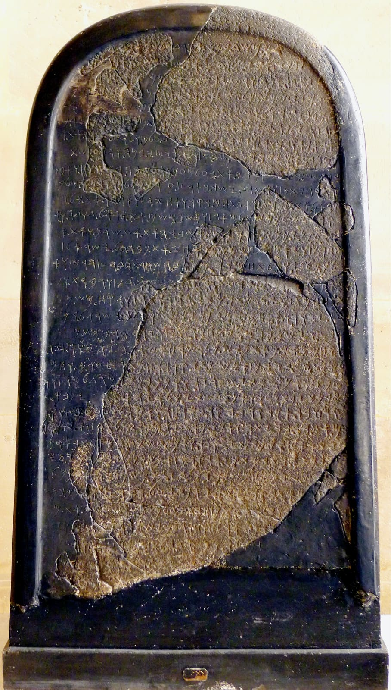
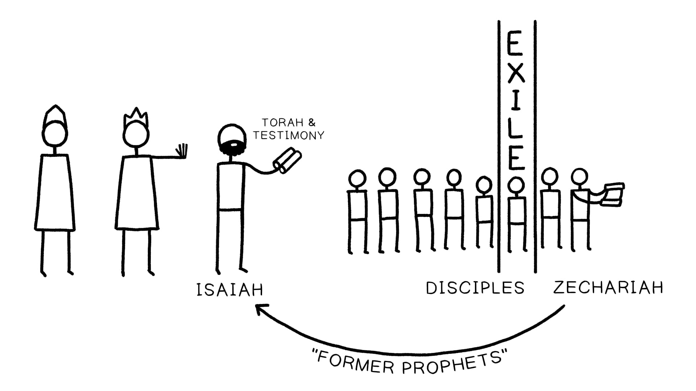

Josué 1:7-8 NAA*Joshua 1:7-8 NASB*
7Sê forte e muito corajoso; tem cuidado de fazer conforme toda a Torá que Moisés, meu servo, te ordenou; não te desvies dela para a direita nem para a esquerda, para que sejas bem-sucedido por onde quer que andares. 8Este rolos da Torá não se apartará da tua boca, antes meditarás nele dia e noite, para que tenhas cuidado de fazer conforme tudo o que nele está escrito; pois então farás prosperar o teu caminho, e então terás sucesso.7Be strong and very courageous; be careful to do according to all the Torah which Moses my servant commanded you; do not turn from it to the right or to the left, so that you may have success wherever you go. 8This scroll of the Torah shall not depart from your mouth, but you shall meditate on it day and night, so that you may be careful to do according to all that is written in it; for then you will make your way prosperous, and then you will have success.
*Palavras-Chave Adaptadas pelo Professor*Key Words Adapted by Teacher
Josué 8:32-35 NAA*Joshua 8:32-35 NASB*
32Lá [Josué] escreveu sobre pedras uma cópia da Torá de Moisés, que ele havia escrito, à vista dos filhos de Israel. 33Todo o Israel, com seus anciãos, oficiais e juízes, estava em pé em ambos os lados da arca, diante dos sacerdotes levitas que carregavam a arca da aliança de Yahweh … 34Então depois leu todas as palavras da Torá, a bênção e a maldição, conforme tudo o que está escrito no livro da Torá. 35Não houve uma palavra de tudo o que Moisés tinha ordenado que Josué não lesse perante toda a congregação de Israel …32[Joshua] wrote there on stones a copy of the Torah of Moses, which he had written, in the presence of the sons of Israel. 33All Israel with their elders and officers and their judges were standing on both sides of the ark before the Levitical priests who carried the ark of the covenant of Yahweh … 34Then afterward he read all the words of the Torah, the blessing and the curse, according to all that is written in the book of the Torah. 35There was not a word of all that Moses had commanded which Joshua did not read before all the assembly of Israel …
*Palavras-Chave Adaptadas pelo Professor*Key Words Adapted by Teacher
Josué é apresentado como um novo Moisés que guarda as Escrituras da aliança e que guia Israel em seu papel como representantes de Yahweh. Ele é um líder fiel por toda a sua vida.Joshua is presented as a new Moses who guards the covenant Scriptures and who guides Israel in their role as Yahweh’s representatives. He is a faithful leader throughout his life.
Observe como Josué 8 continua a associação dos textos da aliança com a arca da aliança. Observe também que a Torá é curta o suficiente para ser escrita em pedras memoriais (como a Estela de Mesa aqui). Isso se refere provavelmente a uma “proto-Torá” em vez da forma atual da Torá.Notice how Joshua 8 continues the association of the covenant texts with the ark of the covenant. Notice also that the Torah is short enough to be written on memorial stones (like the Mesha Stele here). This likely refers to a “proto-Torah” rather than to the current form of the Torah.
Depois que Josué morre, Israel abandona sua parceria de aliança com Yahweh e começa uma história de séculos de apostasia e rebelião da aliança.After Joshua dies, Israel abandons its covenant partnership with Yahweh and begins a centuries-long history of apostasy and covenant rebellion.
Juízes 2:6-10 NAA*Judges 2:6-10 NASB*
6Quando Josué despediu o povo, os filhos de Israel foram, cada um para a sua herança, possuir a terra. 7O povo serviu a Yahweh todos os dias de Josué, e todos os dias dos anciãos que sobreviveram a Josué, os quais tinham visto toda a grande obra que Yahweh tinha feito por Israel. 8Então Josué, filho de Num, servo de Yahweh, morreu à idade de cento e dez anos. … 10Toda aquela geração também foi congregada aos seus pais; e se levantou após eles outra geração que não conhecia a Yahweh, nem tão pouco a obra que ele tinha feito por Israel.6When Joshua had dismissed the people, the sons of Israel went each to his inheritance to possess the land. 7The people served Yahweh all the days of Joshua, and all the days of the elders who survived Joshua, who had seen all the great work of Yahweh which he had done for Israel. 8Then Joshua the son of Nun, the servant of Yahweh, died at the age of one hundred and ten. … 10All that generation also were gathered to their fathers; and there arose another generation after them who did not know Yahweh, nor yet the work which he had done for Israel.
*Palavras-Chave Adaptadas pelo Professor*Key Words Adapted by Teacher
A partir deste ponto, Yahweh tem de escolher a partir de uma minoria de representantes fiéis entre os israelitas que são chamados profetas. Eles são os representantes da aliança de Yahweh que oferecem crítica e orientação regulares aos reis, sacerdotes e profetas de Israel.From this point on, Yahweh has to choose from a minority of faithful representatives among the Israelites who are called prophets. They are Yahweh’s covenant representatives who provide regular critique and guidance to Israel’s kings, priests, and prophets.
Os profetas bíblicos, em geral, são desconfiados das instituições israelitas da monarquia, do sacerdócio do templo e dos profetas oficiais. Samuel, Natã, Gade, Elias e Eliseu todos confrontaram os reis, sacerdotes ou profetas de Israel.The biblical prophets, on the whole, are suspicious of the Israelite institutions of the monarchy, temple priesthood, and the official prophets. Samuel, Nathan, Gad, Elijah, and Elisha all confronted Israel’s kings, priests, or prophets.
Os profetas falaram em resistência à monarquia israelita e seus abusos e apostasia, e criticaram o sacerdócio israelita e seus profetas patrocinados.The prophets spoke in resistance to the Israelite monarchy and its abuses and apostasy, and they critiqued the Israelite priesthood and their sponsored prophets.
1 Samuel 12:13-15, 19-20 NAA*1 Samuel 12:13-15, 19-20 NASB*
13“Agora, pois, eis o rei que escolhestes, que pedistes, e eis que Yahweh estabeleceu sobre vós um rei. 14Se temerdes a Yahweh, e o servirdes, e ouvirdes a sua voz, e não rebelardes contra o mandamento de Yahweh, então, tanto vós como também o rei que reina sobre vós, seguireis a Yahweh vosso Deus. 15Se não ouvirdes a voz de Yahweh, mas rebelardes contra o mandamento de Yahweh, então a mão de Yahweh será contra vós, como o foi contra vossos pais.” … 19Então todo o povo disse a Samuel: “Roga pelos teus servos a Yahweh teu Deus, para que não morramos, pois temos acrescentado a todos os nossos pecados este mal, pedindo para nós um rei.” 20Disse Samuel ao povo: “Não temais. Vós tendes cometido todo este mal; todavia não vos desvieis de seguir a Yahweh, mas servi a Yahweh de todo o vosso coração.”13“Now therefore, here is the king whom you have chosen, whom you have asked for, and behold, the LORD has set a king over you. 14If you will fear Yahweh and serve him, and listen to his voice and not rebel against the command of Yahweh, then both you and also the king who reigns over you will follow Yahweh your God. 15If you will not listen to the voice of Yahweh, but rebel against the command of Yahweh, then the hand of Yahweh will be against you, as it was against your fathers.” … 19Then all the people said to Samuel, “Pray for your servants to Yahweh your God, so that we may not die, for we have added to all our sins this evil by asking for ourselves a king.” 20Samuel said to the people, “Do not fear. You have committed all this evil, yet do not turn aside from following the LORD, but serve Yahweh with all your heart.”
*Palavras-Chave Adaptadas pelo Professor*Key Words Adapted by Teacher
Veja também Amós 7:10-17; Isaías 39; Jeremias 36See also Amos 7:10-17; Isaiah 39; Jeremiah 36
Jeremias 5:30-31 NVI*Jeremiah 5:30-31 NIV*
*Palavras-Chave Adaptadas pelo Professor*Key Words Adapted by Teacher
Jeremias 32:32-33 NVI*Jeremiah 32:32-33 NIV*
32O povo de Israel e Judá me provocou com toda a maldade que fez—eles, seus reis e oficiais, seus sacerdotes e profetas, o povo de Judá e os que habitam em Jerusalém. 33Viraram as costas para mim, e não o rosto …32The people of Israel and Judah have provoked me by all the evil they have done—they, their kings and officials, their priests and prophets, the people of Judah and those living in Jerusalem. 33They turned their backs to me and not their faces …
*Palavras-Chave Adaptadas pelo Professor*Key Words Adapted by Teacher
Veja também Oséias 4:4-9; Amós 7:14; Isaías 28:7; 1 Reis 17-19See also Hosea 4:4-9; Amos 7:14; Isaiah 28:7; 1 Kings 17-19
Tarde na monarquia israelita, os textos da aliança das Escrituras são negligenciados e esquecidos até serem descobertos por um rei semelhante a Moisés (Josias) e interpretados por uma profetisa semelhante a Moisés (Hulda) em 2 Reis 22:1-20.Late in the Israelite monarchy, the covenant texts of the Scriptures are neglected and forgotten until they are discovered by a Moses-like king (Josiah) and interpreted by a Moses-like prophet (Huldah) in 2 Kings 22:1-20.
Os rolos bíblicos afirmam vir de uma tradição de líderes proféticos em Israel que se origina em Moisés. Esses textos refletem um “relatório da minoria” dentro do antigo Israel, vindo daqueles que foram fiéis a Yahweh e permaneceram verdadeiros à aliança do Sinai.The biblical scrolls claim to come from a tradition of prophetic leaders in Israel that stems from Moses. These texts reflect a “minority report” within ancient Israel that comes from those who were faithful to Yahweh and remained true to the Sinai covenant.
A história de Juízes até 2 Reis retrata a maioria dos israelitas e seus reis como apóstatas. Este retrato só poderia vir do grupo minoritário de israelitas que permaneceram fiéis a Yahweh e críticos da maioria (pense nos “7.000 que não se curvaram a Baal” em 1 Reis 19:14, 18).The story of Judges through 2 Kings depicts the majority of Israelites and their kings as apostate. This portrait could only come from the minority group of Israelites who remained faithful to Yahweh and critical of the majority (think of the “7,000 who haven’t bowed to Baal” in 1 Kgs. 19:14, 18).
Para este remanescente profético fiel dentro de Israel, a Torá permaneceu uma fonte de autoridade da aliança para diagnosticar o fracasso presente de Israel e uma fonte de esperança futura para o cumprimento das promessas de Deus a Abraão.For this faithful prophetic remnant within Israel, the Torah remained a source of covenant authority to diagnose Israel’s present failure and a source of future hope for the fulfillment of God’s promises to Abraham.
As instituições da monarquia, do sacerdócio e dos profetas da corte foram todas eliminadas quando a nação foi dispersa da terra e levada para o exílio.The institutions of the monarchy, priesthood, and court prophets were all eliminated when the nation was scattered from the land and carried off into exile.
Lamentações 2:6-9 NVI*Lamentations 2:6-9 NIV*
*Palavras-Chave Adaptadas pelo Professor*Key Words Adapted by Teacher
Um grupo minoritário entre os exilados voltou-se para os escritos preservados pelos verdadeiros profetas, cujas palavras sobre o julgamento de Israel se cumpriram.A minority group among the exiles turned to the writings preserved by the true prophets, whose words about Israel’s judgment had come to pass.
Os exilados que retornam da Babilônia têm uma alta visão da Torá e dos Profetas, e antecipam o cumprimento das promessas proféticas de restauração.The exiles who return from Babylon have a high view of the Torah and Prophets, and they anticipate the fulfillment of the prophetic promises of restoration.
A principal tarefa de Esdras era ensinar as Escrituras (Esdras 7:6, 25-26; Ne. 8).Ezra’s main task was to teach the Scriptures (Ezra 7:6, 25-26; Neh. 8).
Os profetas do exílio estão cientes de sua dependência da Escritura pré-exílica (Zc. 1:2-6; 7-8).The exilic prophets are aware of their dependence on the pre-exilic Scripture (Zech. 1:2-6; 7-8).
A forma canônica final da coleção do TaNaK tem um carimbo pós-exílico, e eleva a importância de imergir-se nas Escrituras (Js. 1, Sl. 1) para promover a esperança futura de restauração (Dt. 34:10-12; Ml. 4:4-5) e a fidelidade contracultural no presente.The final canonical shape of the TaNaK collection has a post-exilic stamp, and it elevates the importance of immersing oneself in the Scriptures (Josh. 1, Ps. 1) to foster the future hope of restoration (Deut. 34:10-12; Mal. 4:4-5) and countercultural faithfulness in the present.


Reflita sobre a ideia de que a Bíblia Hebraica foi escrita ao longo de um longo período de tempo por um grupo minoritário criticando a liderança da nação. Isso muda ou desafia sua visão da Bíblia Hebraica de alguma forma? Se sim, como? Como você acha que essa ideia contribui para o que você encontra na Bíblia Hebraica?Reflect on the idea that the Hebrew Bible was written over a long period of time by a minority group criticizing the nation’s leadership. Does this change or challenge your view of the Hebrew Bible in any way? If so, how? How do you think this idea contributes to what you find in the Hebrew Bible?
Louvre stèle de Mésha (840) Wikipedia
The Faithful Prophetic Tradition. Illustration created by Tim Mackie for BibleProject Classroom: Introduction to